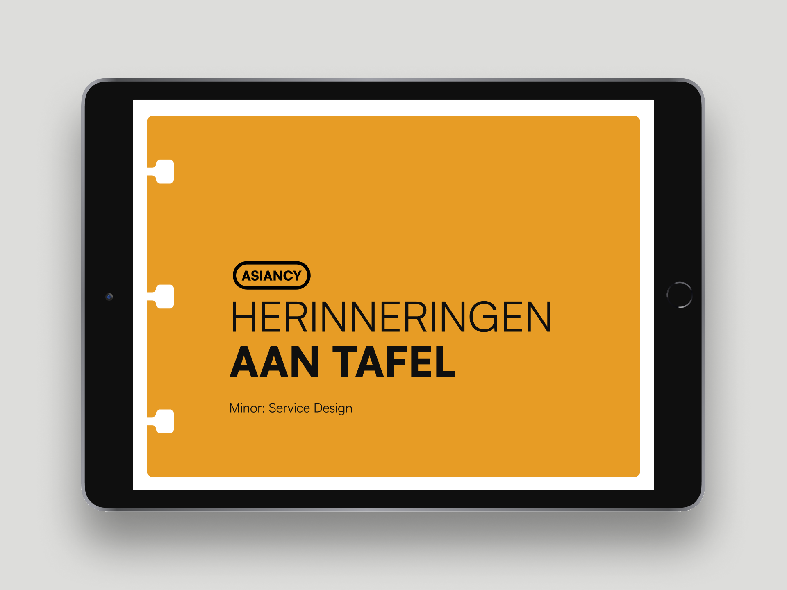
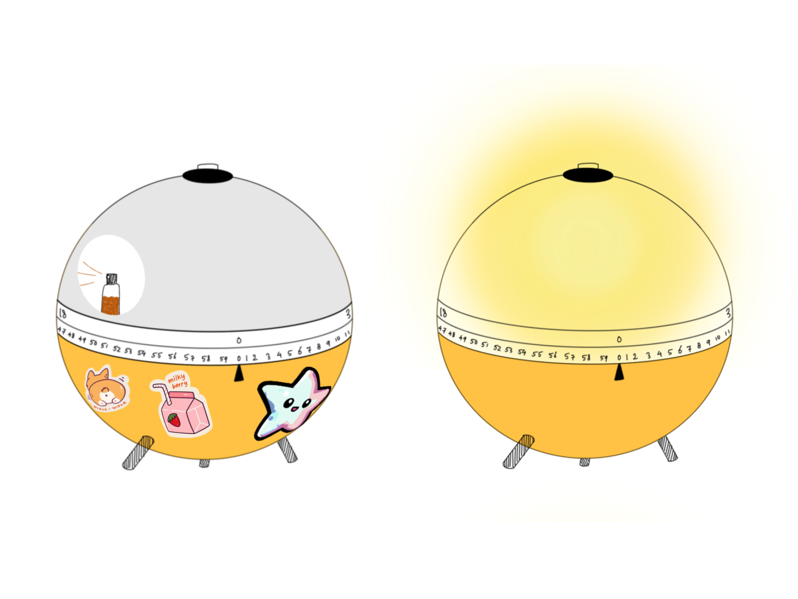

uc design


Herinnering Aan Tafel | Amsterdam, 2026
Over a six-month period, we developed an interactive exhibition concept for Wereldmuseum Amsterdam, focused on cultural preservation, combining research, storytelling, and immersive audiovisual design within a service design framework.
CLICK to view Design Brief (NL)
LumiRise | Amsterdam, 2024
For this project, we explored a user-centered multimodal concept where interaction is not limited to a single input. By combining different forms of input and feedback, we designed a system that supports a more natural way of waking up through light and scent.
CLICK to view Design Rationale (NL)